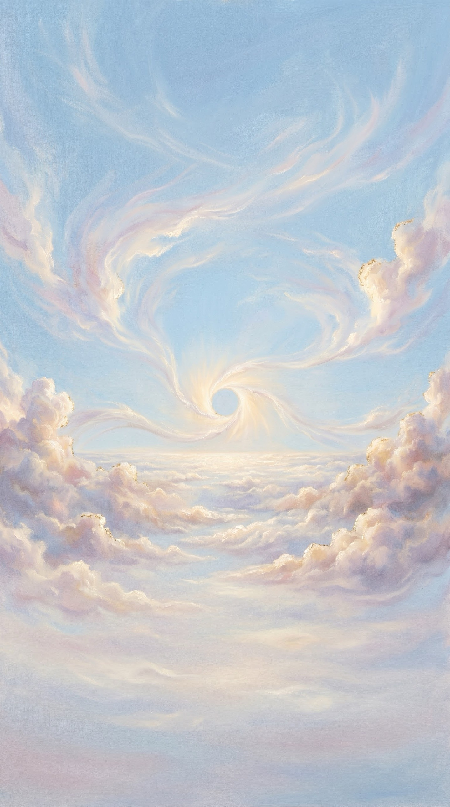
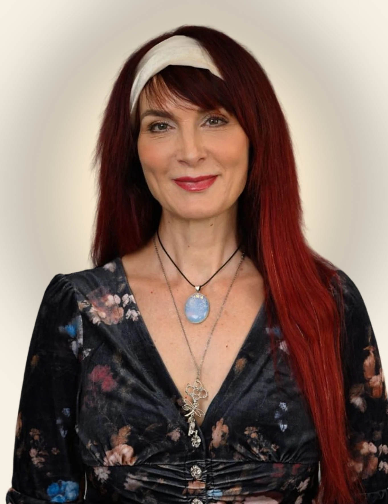
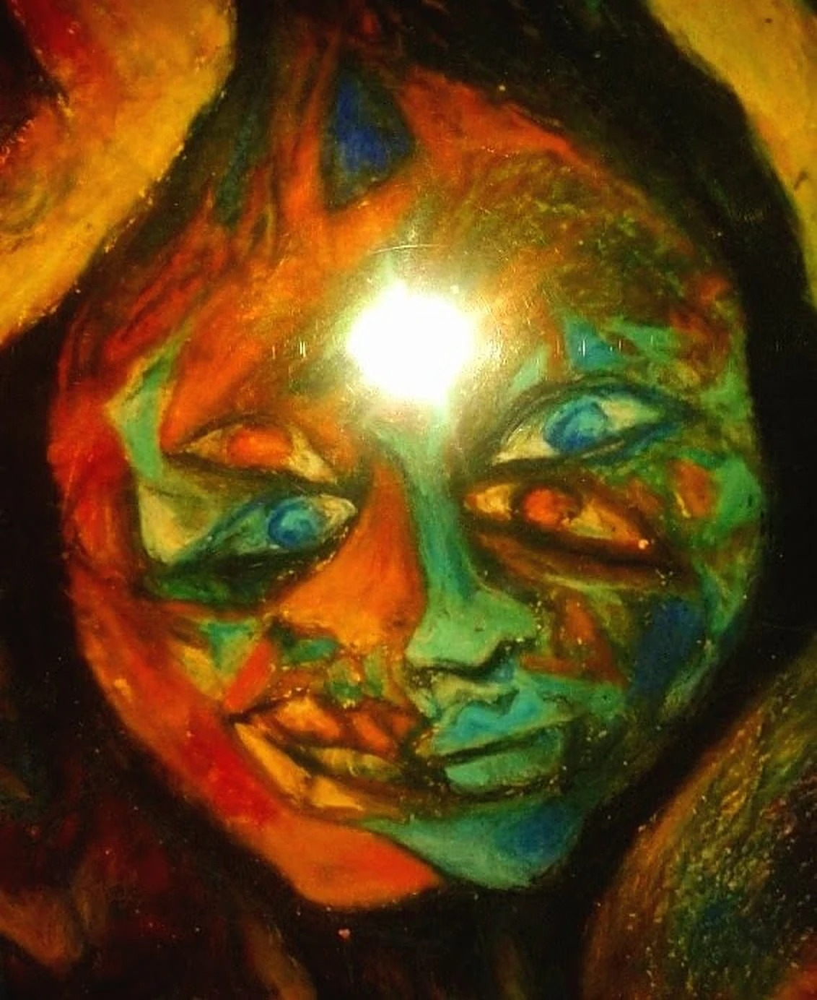
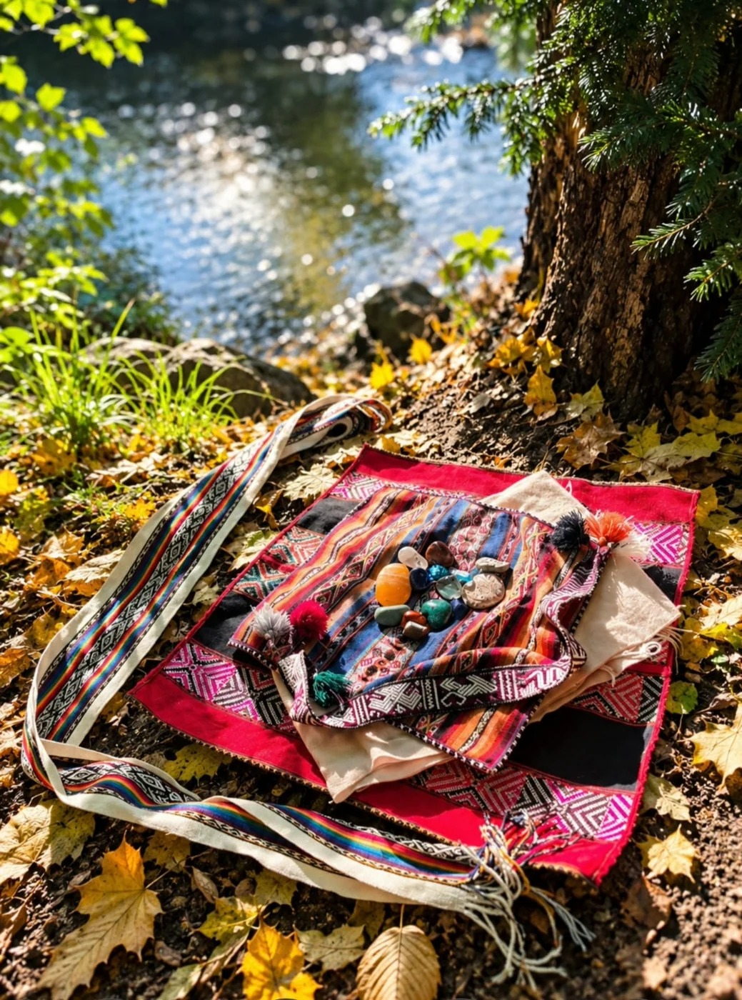

Energiearbeit · Körperwahrnehmung · Kreativer Ausdruck
Zwischen Verstehen und Erleben liegen oft Welten.
Aufklappen & Reise beginnen

Herzlich willkommen
Spürst du, dass sich etwas in deinem Leben verändern möchte?
Ich begleite dich auf deinem persönlichen Weg der Veränderung mit Energie- und Körperarbeit.
In meiner Arbeit verbinde ich schamanische Energiearbeit mit feiner Körperwahrnehmung und kreativer Integration. Gemeinsam schauen wir auf das, was unter der Oberfläche wirkt und schaffen Raum für Klarheit, Wandlung und neue Lebendigkeit.
Die Wurzeln meiner Arbeit
Meine Arbeit ist in den indigenen Heiltraditionen der Anden und des Amazonas verwurzelt und fand durch Dr. Alberto Villoldo und die von ihm gegründete Four Winds Society ihren Weg in die westliche Welt.
Katharina

Gemälde von Katharina
Alles ist Energie.
Alles, was Form annimmt, ist auch Energie.
Mensch. Tier. Pflanze.
Wasser. Erde.
Berge. Steine.
Energie ist in allem.

Meine MesaEin geweihter Kraft- und Ritualraum in der Tradition der Q’ero. Sie ist Bestandteil jeder Begleitung, hält den Raum und trägt den Prozess.

Zeit und Raum für deinen Weg
So steigen wir gemeinsam ein
- IKostenloses Erstgespräch – 30 Minuten
- IIAnkommen
- IIIDie Begleitung
- IVIntegrieren und verankern
Auch danach bin ich für dich da: Für kurze Fragen und Impulse zur Integration erreichst du mich über WhatsApp – ohne zusätzliche Kosten.
Sozialtarif: In begrenztem Umfang biete ich Termine zu einem reduzierten Sozialtarif an. Sprich mich gerne an.

Scannen & Erstgespräch vereinbarenwegdervierwinde.de
+49 1573 4359358 · energie.medizin@web.de
Instagram @katharinawegdervierwinde
Vor Ort in München-Pasing
Meine Arbeit ist eine energetische und körperorientierte Begleitung. Sie ersetzt keine ärztliche, psychotherapeutische oder heilpraktische Diagnose oder Behandlung. Ich stelle keine Diagnosen und gebe keine Heilversprechen.